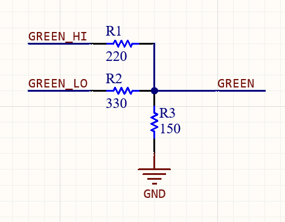
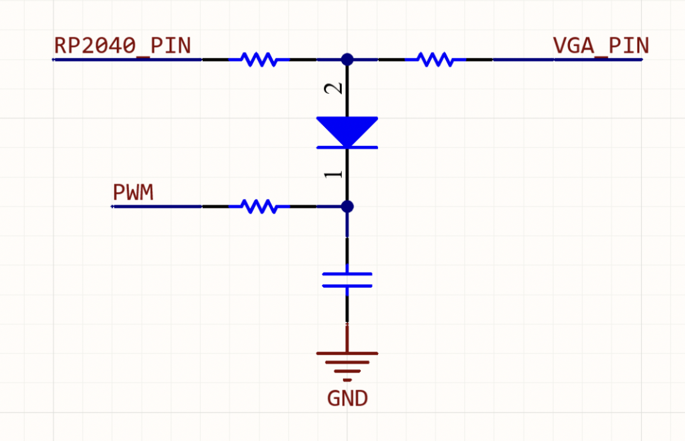

Hardware Design
For this project, the Raspberry Pi Pico was connected to three external hardware interfaces: a VGA screen to display the game, a speaker, and a UART channel to a serial client. All project-specific hardware was implemented on a breadboard with jumper wires. For the serial interface, two pins on the RP2040 (UART_TX and UART_RX) are connected to a host computer with a USB-serial converter dongle.
The VGA screen is connected to the RP2040 with a series of 6 hardware connections: HSYNC, VSYNC, RED, GREEN, BLUE and GND. The HSYNC and VSYNC lines are driven by Professor Hunter-Adams’ VGA driver, but we modified the color connections to the RP2040 to allow for use of 4-bit color, giving us access to a greater suite of colors for our designs. The 4th bit doubles the resolution of the GREEN line, so while each of the RED and BLUE VGA lines have a 330ohm resistor in series (which, in addition to an internal 70 ohm resistor, pulls the color line to a safe voltage), a special resistor divider is required for the GREEN VGA line, pictured below.
We briefly attempted to add fade-to/from-black transitions when moving between levels. Our plan was to use low-passed PWM channels and Schottky diodes to gradually pull the VGA color lines down to ground, creating a fade effect on the VGA screen. This is pictured below. However, two problems arose: the low-pass filter would create an unintended resistor divider and the Schottky diodes could not completely pull the color line to ground. Ultimately, this was not considered for use.
For the speaker circuit, the following four signals were connected from the serial peripheral on the RP2040 to the DAC IC: serial clock, serial data, latching input, and chip select. Other I/O for the DAC IC included power and ground, and two analog output channels (identified by A and B). Each of these output channels could be wired to a 3.5mm headphone jack receptacle, which allows us to connect a speaker system to the DAC. A full schematic of the hardware, as well as a breadboarding diagram, are pictured below: